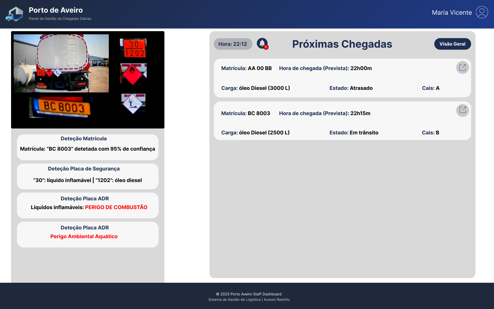

Project Intelligent Logistics
Automation and optimization of port logistics with Artificial Intelligence
Introduction
We live in an era where logistics is invisible but essential: our packages arrive the next day with a single click, but behind that process there are millions of containers and complex operations. In 2023 alone, an estimated 858 million containers passed through seaports worldwide, moved by ships, trucks, and land infrastructure.
This growing volume brings major logistics challenges: delays, routing errors, and operational costs. In large ports - true labyrinths with dozens of warehouses - a single wrong instruction can send cargo to the wrong destination, causing losses in time and money.
Motivation
To increase efficiency and reduce costs, port authorities are adopting Information and Communication Technologies (ICT) and Industry 4.0 concepts. With the democratization of Artificial Intelligence, cloud computing, and process digitization, innovative solutions are emerging to make logistics more intelligent, automated, and sustainable.
The Intelligent Logistics project proposes:
- Automate truck entry control at a port
- Detect vehicles and cargo through cameras and computer vision algorithms
- Integrate information with an intelligent logistics system that decides entry and the correct destination
- Inform the driver clearly, either via digital signage at the port or mobile applications
System Design
The system is organized into two main application domains:
Artificial Intelligence Domain
- Python agents specialized in computer vision (YOLO, OCR)
- Truck detection, license plate recognition, and dangerous goods symbol recognition
- Real-time processing isolated from the operational core
Validation and Operations Domain
- Decision engine with port business rules
- Data management and persistence with PostgreSQL, Redis, and MongoDB
- Statistical analysis and operations reports
Port of Aveiro Trials (6G-VERSUS)
This section highlights the project's real-world validation track and ongoing trial updates at the Port of Aveiro, within the 6G-VERSUS scope.
Latest update: Pre-trial activities completed in a controlled environment. On-site validation planning with operational stakeholders is in progress.
Trial Context
The trial consists of a route instrumented with two cameras. The first camera focuses on truck detection and dangerous goods identification through ADR placards. When dangerous goods are detected, a prohibition sign for hazardous materials is activated.
Validation Targets
The second camera simulates the Port of Aveiro entry gate, where the truck stops and complete validation is performed to decide whether the vehicle is authorized to enter. Key targets include end-to-end latency, OCR and hazard-symbol recognition performance, hazardous-material alerting reliability, and operator usability.
Update Board
- Phase: Pre-trial and controlled pilot completed
- Current: Preparing supervised on-site trial windows
- KPIs tracked: Latency, detection accuracy, manual override rate, and processing throughput
- Next milestone: Full trial run in Port of Aveiro with post-trial evaluation report

Our trial is integrated within the scope of European R&I initiatives for smart networks and services. Institutional framework: Smart Networks and Services Joint Undertaking and Horizon Europe.
Trial Dashboards
Additional dashboards dedicated to monitoring and validating the Port of Aveiro trial operation.


Demo
Demonstration video of the Port of Aveiro trial.
Detailed Project Information
Project Overview
Intelligent Logistics is an innovative platform for automating and optimizing port logistics, combining computer vision, real-time data analysis, and intelligent orchestration to manage cargo and vehicle entry, routing, and operations.
Main Objectives:
- Reduce waiting and processing times
- Minimize routing errors
- Support real-time operational decisions
- Provide monitoring dashboards
- Increase safety in dangerous cargo handling
This project combines AI, computer vision, logistics, and energy efficiency, aligned with Industry 4.0 challenges.
System Architecture
The system uses a modular, event-driven architecture, clearly separating artificial intelligence processing from operational decisions. Two isolated application domains communicate through asynchronous event streams (Apache Kafka), ensuring low latency and scalability. External access is controlled through dedicated gateways.
AI Domain
Python agents specialized in detection, OCR, and symbol recognition (YOLO, PaddleOCR).
Operations Domain
Decision engine that applies business rules and orchestrates port processes.
Access Gateways
Controlled interfaces for mobile applications, web dashboards, and external systems.
Asynchronous Communication
Apache Kafka manages event streams between domains, ensuring decoupling and reliability.
Architecture

Architecture Benefits:
- Scalable: Adds cameras and sensors without global impact
- Real-time: Latency < 5s between capture and notification
- Integrable: REST API easily consumed by external systems
- Secure:Data protection and privacy ensured
The database structures the full lifecycle of a visit: an Appointment/Booking links a truck, driver, company, and terminal/gates, receives a cargo, is materialized as a Visit (entry/exit) in a Shift, and can generate related Alerts.
Domain Mapping
Capability comparison across the database triad.
Consistency Patterns
Keeping polyglot systems synchronized requires rigorous application coordination, accepting eventual consistency and distributed transactions.
1. Write-through Cache
PostgreSQL ↔ Redis. Validation results (e.g., infractions) are cached in Redis with TTL. Reduces latency at the port gate to sub-millisecond.
2. Outbox Pattern
PostgreSQL → MongoDB → Redis. State changes create an outbox record. A worker reads and propagates to MongoDB and Redis Streams. Prevents lost events.
3. Saga Pattern
Distributed Transaction. (1) Validate manifest (PG), (2) Check compatibility (Mongo), (3) Analyze position (Redis). Failures trigger compensating transactions.
Functional Requirements
- Automatic real-time truck detection
- Detection and classification of vehicle license plates
- Recognition of dangerous goods symbols (ADR)
- Cargo identification through safety plates
- Vehicle state management (entry, processing, exit)
- Integration with logistics management system
- Automatic routing to the correct destination
- Driver notification via digital signage/mobile app
- Generation of statistical reports on traffic and cargo
- Real-time dashboard for operators
Non-Functional Requirements
- Performance: Response time < 5s between capture and notification
- Scalability: Support multiple cameras and thousands of vehicles/day
- Availability: 99% SLA in production environment
- Reliability: Detection accuracy rate > 90%
- Security: Data encryption and access control
- Energy Efficiency: Optimization of computational resources
- Maintainability: Modular and well-documented architecture
- Flexibility: Ability to learn new cargo symbols/types
Personas & User Stories
Gate Operator
"As an operator, I want to immediately see the recommended destination and vehicle status to speed up entry processing and reduce queues."
- Clear and responsive interface
- Alerts for dangerous cargo
- History of processed vehicles
Truck Driver
"As a driver, I want to receive clear and simple instructions (via signage or app) to quickly reach the correct dock without wasting time."
- Clear visual directions
- Real-time notifications
- Simple mobile interface
Port Manager
"As a manager, I want dashboards with performance metrics and detailed reports to optimize operations and make informed decisions."
- Detailed statistical reports
- Trend visualization
- Anomaly alerts
Main User Stories
Frameworks & Technologies
Computer Vision
- YOLOv11 (Object detection)
- OpenCV
- PaddleOCR (Text recognition)
- Consensus Algorithm (Multi-frame)
Messaging & Events
- Kafka Broker
- WebSockets for real-time
Front-end Web
- React 19 + TypeScript
- Vite (Build tool)
Mobile App
- React + Capacitor
- Leaflet (Maps)
- HLS.js (Video streaming)
- Android (Android Auto)
Back-end
- Python (FastAPI)
- REST APIs + WebSocket
- AI Agents (A, B, C), Decision Engine, and Data Module
- Apache Kafka (Message Broker)
- MinIO (Object Storage)
Persistence (Data Module)
- PostgreSQL: Simulation of port data structure (appointments, drivers, cargo, terminals)
- MongoDB: Detection logs, OCR events, and recognition failures
- Redis: Decision cache and duplicate prevention (idempotency)
Orchestration
- Docker containers
- Kubernetes
- CI/CD pipelines with Jenkins
Integration
- APIs RESTful
- Grafana for metrics visualization
- Webhooks for notifications
Security
- JWT for authentication
- Rate limiting
Modern Stack: All selected technologies are open-source or widely adopted in the industry, ensuring maintainability and continuous system evolution.
Mockups & Prototypes
Interface mockups and dashboard screenshots for different personas.



Final Results
Real dashboards for the Logistics Manager, Gate Operator, and Drivers.
Logistics Manager


Gate Operator


Drivers

Demo MVP
Demonstration videos of the Intelligent Logistics MVP, showcasing the main implemented features.
The videos demonstrate MVP features, including automatic detection routing, and real-time notifications.
Future Evolution / Future Work
Planned areas for research, prototyping, and development in the next project phases:
- Testing in real environments: camera installation at a gate to measure latency, accuracy, and robustness.
- Active learning: enable updates and continuous learning for new cargo and symbol types.
- MLOps pipeline: automate model training, validation, and continuous deployment with metrics and versioning.
- Privacy and anonymization: techniques for GDPR compliance (blur/anonymization of faces and plates where applicable).
- Energy efficiency: optimize consumption in inference and infrastructure, balancing performance and energy use.
- Integration with physical controllers: digital signage, APIs, and integration with third-party systems.
- Administration interface & dashboard: model management, KPI visualization, and operational workflows.
- Advanced monitoring: anomaly detection, operational alerts, and automated reports.
Prioritize low-risk initiatives and objective metrics (suggested KPIs: average latency, false detection rate, average processing time, energy cost per inference).